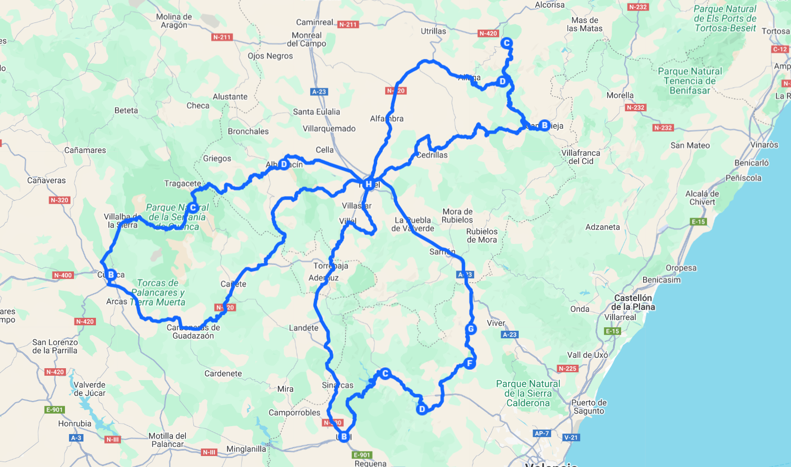

LA FLOR DE TERUEL
Recorrer en moto la ruta La Flor de Teruel es sumergirse en la esencia más pura de la carretera, donde cada jornada ofrece una combinación única de curvas, paisajes y sensaciones. Desde el primer día, la reunión en Teruel marca el inicio de una experiencia compartida, donde la hermandad motera y la emoción de lo que está por venir se respiran en el ambiente. Es el prólogo perfecto para lanzarse a una travesía que combina la fuerza de la montaña con la calma de los valles abiertos.
El itinerario se despliega en rutas variadas, desde la intensidad de la llamada Ruta del Silencio hasta los trayectos más extensos que conducen hacia Cuenca y Albarracín. Cada kilómetro es un diálogo constante entre la moto y el terreno: carreteras secundarias que se enroscan en la montaña, tramos donde la velocidad se confunde con el viento y paisajes que se abren de golpe como un regalo inesperado. Rodar aquí no es simplemente desplazarse, es sentir cómo cada curva se convierte en parte de una coreografía perfecta.
En el recorrido aparecen pueblos que salpican el horizonte y que, aunque se cruzan sin detenerse, transmiten la autenticidad de esta tierra: caseríos de piedra, sierras que enmarcan el horizonte y rincones donde la naturaleza marca el ritmo del día. Entre Utiel, Tuéjar, Chulilla o Alcublas, la carretera invita a mantener la concentración y al mismo tiempo dejarse llevar, con esa sensación de libertad que solo la moto puede ofrecer.
La gastronomía local, el carácter acogedor de la gente y la calma de Teruel como punto de partida y llegada completan la experiencia. Tras cada etapa, el cansancio físico se mezcla con la satisfacción de haber rodado en rutas que parecen diseñadas para quienes buscan emoción y plenitud. Las conversaciones al final del día se convierten en parte del viaje, donde cada piloto comparte su versión de la ruta vivida.
✔️ TU VIAJE INCLUYE …
- Pack de Bienvenida
- Desayunos en Hotel y Cenas en Ruta
- 5 días y 4 noches en Hoteles
- Aparcamiento para tu vehículo
- Video reportaje del viaje
- Seguro de Protección Civil
- 2 Personas coordinan el grupo
- En las comidas y cenas solo se incluye ” Agua “
❌ TU VIAJE NO INCLUYE …
- Motocicleta para el viaje
- Cualquier concepto no especificado en el apartado ” Tu Viaje incluye …”
- Gasolina y peajes de Autopistas o Autovías
- No se cubren gastos derivados de conductas negligentes o irresponsables
- El seguro de protección civil incluido solo cubre a terceros y no reemplaza el seguro personal obligatorio
- Bebidas en ruta y por supuesto bebidas alcohólicas ni bebidas en minibar de hoteles
- Entradas a Monumentos
- Las propinas son voluntarias y a discreción del cliente
🗒️ A TENER EN CUENTA …
- Todas las habitaciones son compartidas. Si viajas solo o no cuentas con un acompañante, la organización te asignará un compañero de cuarto para que disfrutes de una experiencia cómoda, segura y social.
- Cada uno se hará responsable de su propio equipaje
- Portar Herramientas necesarias para el mantenimiento de tu moto y un Kit de reparapinchazos
- Llevar los medicamentos personales y cualquier material médico necesario
- Pasaporte y visado en regla
- Permiso de circulación y tarjeta ITV, Carnet de Conducir
DÍA 1
Reunión en el Hotel
El viaje comienza en el Hotel, punto de encuentro donde las motos y sus pilotos se dan cita con la ilusión de compartir ruta y kilómetros.
DÍA 2
Ruta del Silencio (300 km)
La carretera nos conduce hacia la Ruta del Silencio, un trazado que serpentea entre montañas y valles solitarios. Las curvas se enlazan con naturalidad, regalando esa sensación única de libertad sobre dos ruedas. El viento, el rugido del motor y los paisajes áridos que se abren a cada giro acompañan en un recorrido que invita a perderse en el silencio del entorno. La jornada nos lleva por carreteras secundarias que son puro disfrute motero hasta regresar a Teruel con la satisfacción de una ruta intensa.
DÍA 3
– Cuenca – Huélamo – Albarracín – Hotel (477 km)
La última etapa nos sumerge en una ruta larga y completa, donde la variedad del terreno mantiene la atención despierta en cada kilómetro. Desde las llanuras que conducen hacia Cuenca hasta los tramos más montañosos, la carretera se convierte en un espacio de conexión con la moto y el paisaje. El paso por Huélamo y Albarracín aporta la emoción de rodar entre pueblos enclavados en la sierra, siempre con curvas que invitan a disfrutarlas con calma y precisión. El regreso a Teruel se vive como un cierre perfecto: cansancio agradable, el eco de los paisajes recorridos y la sensación de haber compartido una experiencia motera auténtica.
DÍA 4
Teruel – Utiel – Tuéjar – Chulilla – Alcublas – Ríos de Abajo – Teruel ( 354 Km)
La jornada se abre con una salida tranquila desde el Hotel rumbo a tierras valencianas.
DÍA 5
Descanso en Teruel
Comida todos juntos y despedida.